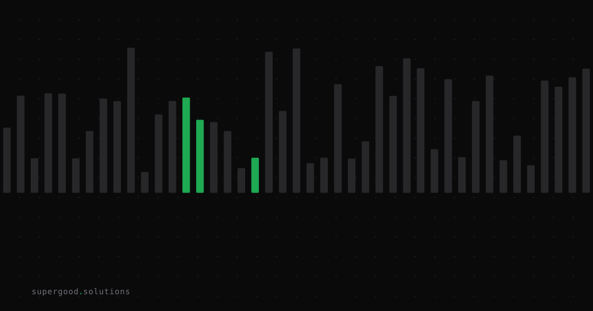

Enterprise Java Migration Is the AI Agent Stress Test Nobody Talks About
TL;DR: Framework migration — the kind enterprise teams are secretly hoping agents will handle — is where production agents fall apart fastest. Benchmarks that test isolated coding tasks miss this entirely.
Key Insight
Everybody talks about agents writing greenfield code. Nobody talks about agents migrating 800,000 lines of Spring Boot 2 to Spring Boot 3 across 140 microservices with circular dependencies, deprecated APIs, and a test suite that was last updated in 2019.
That's the actual enterprise backlog. And agents are not good at it yet — not because they can't write Java, but because long-horizon, dependency-heavy refactors violate every assumption that makes current agentic coding work.
Most coding benchmarks measure whether an agent produces the correct answer. A small number measure how efficiently it gets there — how many steps, how many tokens, how much backtracking. Hugging Face's "Is it agentic enough?" study is one of the few that tracks the process, not just the outcome. Their finding: two agents can both arrive at the right answer while one burns 6× more tokens and three debug loops getting there. In a single-file task, that's inefficiency. In a 200-file migration, that's a budget overrun and a broken codebase.
Scale that to a real enterprise migration and the problem isn't token cost — it's compounding error. Every intermediate wrong decision the agent makes becomes the premise for the next decision.
Why Teams Miss This
Enterprise teams looking at AI agents for migration work tend to evaluate on the wrong signals:
They test on toy repos. A demo that migrates a 3-file Spring Boot app from Java 11 to Java 21 is genuinely impressive. It does not predict what happens on a real monolith with Hibernate 5, custom Spring Security configs, and three layers of internal shared libraries that were never published to a registry.
They trust pass rates from the wrong benchmarks. SWE-bench is the gold standard for agent code tasks, and the numbers look promising — top agents now resolve over 50% of verified GitHub issues. But SWE-bench issues are small, self-contained, and well-scoped. An enterprise migration is none of those things.
They underestimate context window exhaustion. The real enemy of long-horizon refactors isn't model intelligence — it's the agent losing the thread. When you're tracking which files reference a now-deleted utility class across a 200-module Maven project, the context window fills up well before the job is done. The agent starts hallucinating class names it already deleted.
They conflate one-shot generation with iterative mutation. Writing code from scratch and refactoring existing code at scale are different cognitive tasks. Agents trained on code generation get confused by code that was almost right and needs surgical edits — not a rewrite, just a precise incision.
How to Actually Do It
If your team is seriously evaluating agents for framework migration work, here's a more honest setup:
1. Layer specialized tooling underneath the agent. OpenRewrite is the best example in the Java ecosystem — a recipe-based automated refactoring engine that handles mechanical changes (import rewrites, API replacements, deprecation fixes) deterministically. Use an agent for judgment calls; use OpenRewrite for the rote mutations. Agents that try to do both at once reliably botch one.
2. Scope the agent to single-module slices. Don't hand a 200-module project to an agent and say "migrate this." Break migration into module-by-module passes with clear success gates (build passes, tests pass, no new lint errors). Each pass is an agentic task with a bounded context.
3. Instrument the process, not just the output. Before you declare a migration agent "working," instrument how many times it reverts a decision it made earlier. If the agent is re-doing work it already did, it's lost the thread. That's the failure mode that kills production runs.
4. Build a migration-specific eval harness. Pick 3-5 representative modules from your actual codebase, freeze a pre-migration snapshot, and run candidate agents against them weekly. Score on: builds successfully, tests pass, no regressions introduced, and — critically — diff coherence (does the diff make sense, or is it a mess of noisy unrelated edits?).
# Minimal migration eval gate (bash)
mvn clean test -pl :target-module -q \
&& echo "PASS: build+test" \
|| echo "FAIL: build or test regression"
git diff HEAD -- target-module/ | diffstat
# human review: is the diff scoped and coherent?5. Separate planning from execution. The best results in long-horizon agent tasks come from a two-pass architecture: one model run that produces an explicit migration plan (which files change, in what order, what the dependency graph is), and a second run that executes against that plan. Planning agents and execution agents need different prompts and different context.
What We've Learned
Pick one real module from your backlog — something you've been dreading — and run it through an agent under honest conditions: your actual codebase, your actual test suite, a real pass/fail gate. Don't demo it on the easy module.
The failure modes you find will be more useful than any benchmark score. Build your eval harness around those failures. That's the only way to know whether agents are actually earning their seat at the enterprise migration table.
Sources
- Is it agentic enough? Benchmarking open models on your own tooling — Hugging Face Blog
- SWE-bench: official benchmark for agent code task resolution rates
- OpenRewrite: automated refactoring engine for Java framework migrations
- Harness, Scaffold, and the AI Agent Terms Worth Getting Right — Hugging Face Blog